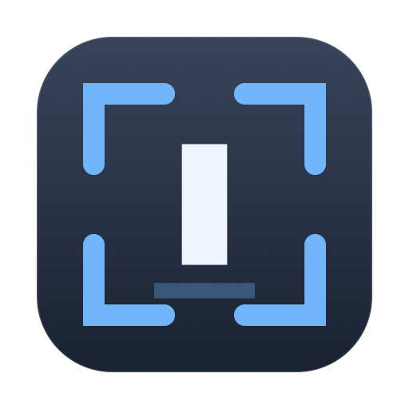

Pilot · Free · macOS 14+GazeFocus watches which screen you're facing and moves keyboard focus there automatically. Look at the other monitor, start typing — the text lands where you're looking.
GazeFocus works — it tracks your head, moves focus between screens, windows and split panes, and the safeguards are in place. What it is not yet is consistently accurate, and that depends on something no amount of code fixes: where your camera is.
What works well today
Where it struggles
You are welcome to try it, and the diagnostics will tell you honestly how well it is doing on your setup. Just do not expect it to feel finished. WakeHold and AFK are the two that are ready.
A second display is supposed to save time. But every time you turn to it, macOS leaves focus behind — so you reach for the mouse, hunt for the window, click, and only then start typing. Dozens of times a day.
You start a sentence on the second screen and discover it went into the chat window you left behind.
Every switch is a hand off the keyboard, a drag across two or three displays, and a click.
Clicking the display isn't enough — you still have to pick out the window you actually wanted.
Four steps, about two minutes, then you can forget it is running.
Screen, window, and split pane.
Detects which display you're facing and restores the window you were last using there, rather than whatever happens to be frontmost.
Works on a single display too — look at a different window on the same screen and focus follows.
Inside editors and terminals, it focuses the individual pane you're reading, not just the window around it.
Clicks that agree with its prediction are treated as hints and refine the fit. Clicks you make without looking are ignored.
Never switches mid-keystroke, mid-shortcut, while a menu is open, or while you are typing a password.
Compensates when you lean in or sit back, and says when it has drifted far enough to be worth recalibrating.
A tool that fires too eagerly is worse than no tool at all. Every one of these is adjustable, and the defaults are deliberately cautious.
A 300 ms rest filters quick glances, so looking away briefly moves nothing.
Focus never moves mid-keystroke, nor for a few seconds after your last one.
A copy is not typing. After one, focus follows faster — so your paste lands where you are looking.
While a modifier is held, focus stays put so the rest of the chord reaches the same app.
While macOS secure input is active, it stands down completely.
Releases the camera the moment your Mac locks or sleeps — the camera light goes out.
The camera is the whole point of the app, so it is worth being precise about what happens to it.
Head position is computed with Apple's Vision framework, locally. Nothing is uploaded.
Frames live in memory for a few milliseconds and are discarded. Nothing is written to disk, ever.
It ships without the network entitlement — it cannot open a connection, accidentally or otherwise.
Nothing to sign up for and no telemetry. It is free, so there is nothing to verify either.
It tracks head pose, not pupils. A webcam cannot resolve a pupil accurately enough at desk distance to pick a window — but head angle, combined with where your face sits in the frame, is enough to tell which screen you are facing. In practice you turn your head toward another monitor anyway.
Yes. On a single display it focuses the window or split pane you are reading. The gain is smaller than with two or three screens, but it is real.
Accuracy depends on the camera seeing your face while you look at each screen. A laptop camera below a large external monitor sees you at a steep angle and detects less reliably. A camera mounted on the display you look at most will track noticeably better.
No. Pointer movement stands it down, and a click is treated as you deciding where focus belongs — it learns from that rather than overriding it.
Frames are processed at 15 per second from a 720p stream, a small fraction of one core. Pause any time with ⇧⌘G.
Usually never — it learns from your clicks. It prompts you if you start sitting at a noticeably different distance, and resets automatically if you rearrange your displays.
Free, about two minutes to set up — and the diagnostics will tell you how well it does on your setup.
Download the pilot GazeFocus
GazeFocus